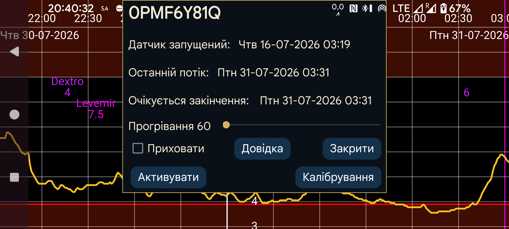

ar de es hi it ja ko nl ru uk uz en
Показує час запуску, останнього потоку й останнього сканування, а також очікуваний та офіційний час завершення роботи датчика.
Прогрівання: Для датчиків Sibionics і Linx/Lumiflex/Aidex X можна змінити тривалість прогрівання в хвилинах. Усі функції ігноруватимуть дані за цей період: крива на екрані, статистика, експортовані дані й дані вебсервера. Це застосовується також заднім числом.
Приховати: Позначення приховує криву. Щоб знову зробити її видимою, можна зняти прапорець або натиснути «Показати» у правому нижньому куті екрана.
Калібрування: Якщо в лівому меню→Налашт.→Калібрування вказано мітку глюкози крові й через ліве середнє меню→Нове значення введено невиключені вимірювання глюкози, натисніть кнопку «Калібрування», щоб переглянути список створених калібрувань. Див.: https://www.juggluco.nl/Juggluco/index.html#calibration
Активувати: Для завершених датчиків показується кнопка «Активувати». Вона дає змогу знову використовувати датчик без сканування матричного коду на упаковці. Це також працює для Libre 2 і 3, але якщо датчик сканували Juggluco на іншому телефоні, його завжди потрібно знову відсканувати через NFC, щоб повернути підключення.